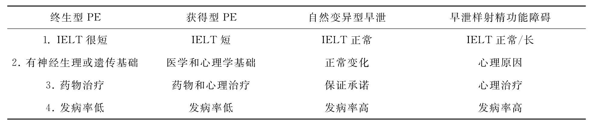
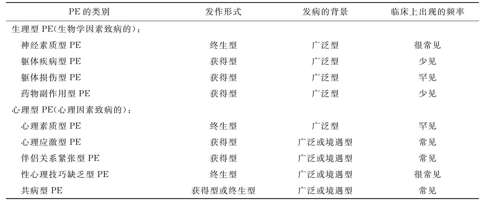

尽管近代对于早泄的研究只有一百多年的历史，但是在诊断与分类方面却取得了巨大进展。随着时代的进步，早泄的诊断越来越国际化，以美国为中心的有关早泄的研究逐渐成为主流并且对世界各国有明显影响。下面我们将简述早泄的诊断演变并且重点介绍美国早泄诊断系统的变化。
有关早泄的分类和诊断标准有很多，不同的学者根据不同的理论提出各自的标准，应该说各有各的道理，关于早泄（PE）的诊断标准差异很大，一个全球普遍认可的早泄定义仍未达成。常见的早泄诊断标准及理论有以下几种：
PE可以降低男性的自尊心，并且损害情侣之间的性关系。这种紧张的性关系导致马斯特思和约翰逊为早泄制定了这样一个定义：“男性在性生活过程中有一半的时候不能延长射精时间以便使配偶达到性高潮。”当这种性功能障碍是男性个人的问题时，它可能已经对伴侣双方都产生了不利影响。有关性交时间越长，女性达到性高潮的比例越高的研究强化了对PE研究的重要性。费瑟的研究表明：只有27%的妇女在少于一分钟的性交中能够经常达到性高潮，而66%的妇女要性交12分钟以上才能经常达到性高潮。费瑟主张女性平均需要8分钟才能经常达到性高潮。有人对马斯特思和约翰逊的PE定义提出批评，认为以女性性生活的满意度或性高潮来决定男性的早泄，其变异性太大，不够科学。
有人认为早泄的定义应该取决于插入和射精之间的一个标准的时间值。瓦西尔赛克经过调查确定：在健康的男性，性交平均持续20分钟。然而，盖勃哈德调查了上千对夫妻，他们的性交持续时间平均为4到7分钟之间，翰特发现美国夫妻的平均性交持续时间为10分钟，施奈波尔调查结果表明50%的德国夫妇性交持续时间为5分钟多一点。为了测定男性的射精时间，豆纳德、波莱克做了一项男性射精时间的测定实验，具体步骤如下：首先向所有的受试者讲解实验的方法和全部过程，在实验开始之前取得实验对象的书面同意，并要求受试者至少在实验前几天要停止性交和手淫等性活动。在他们进入实验室之前，已经准备好接受测定射精时间的局部按摩刺激。他们被蒙上眼睛，仰卧在床上。在蒙上眼睛之后，女工作人员开始进行按摩，使用按摩油只对阴茎进行局部按摩。按摩师均是经过了职业训练，了解实验目的并且同意参加实验研究。所有参加实验的男性全部接受同一女性的局部阴茎按摩刺激。按摩是连续的，射精后停止。从开始刺激（从勃起时计算，因为有一些人在进入实验室时还没有勃起）到射精，定义为射精时间。达到勃起的时间，射精时间以及射精力量均由一名研究人员在隔壁的房间内记录下来，对受试者保密。同样的实验连续进行4次，每次间隔一周，实验对象和按摩师不变。结果所有男性4次射精时间的范围是45～470秒，平均数和标准差（SD）为156.5±80.7秒（N等于116）。116个实验样本的射精时间的频率呈正态分布。这为我们提供了一个较为可靠的男性射精时间的标准值。
又有人认为插入后的抽动次数很重要，因此，对PE提出不同的定义，如插入阴道后的抽动次数（例如8次或15次）和随意控制的能力。卡普兰将PE定义为缺乏对射精的控制，而拉舍斯对此有不同看法。在性学家最近最常使用的PE标准定义中，爱萨里安引用了“随意控制”。有关PE的定义很多，例如将时间与随意控制结合，将时间与随意控制看成一个连续过程，以及加入劳丽的早泄严重程度指数的多重标准（Laurie-PESI）。目前早泄的诊断标准中很少使用抽动次数的概念，也很少使用射精控制力的概念，在诊断标准中经常会出现射精的控制力，但并非必要的条款。
1.罗皮克洛认为插入后维持5分钟以上，或双方都同意他们的性生活美满，不因努力延迟射精而有所影响，即为正常。
2.我国著名的男科和泌尿外科学专家吴阶平教授认为，在壮年健康成人，在性交2～6分钟时射精或更短时间内射精仍属正常。
3.我国中华医学会精神科分会制定的早泄诊断标准为 射精过早致使性交不满意，严重者阴茎插入阴道时就射精。继发于勃起延迟者诊断为ED。诊断标准：①性交时射精过早，致使性交不满意。②持续至少三个月。③不是器质性原因所致。中国精神疾病诊断标准延用其他精神障碍的病程概念，如抑郁症、焦虑症，首次将病程纳入早泄的诊断标准中。但偶发的早泄怎么会持续三个月呢？如果新婚后三个月内一直是早泄，他们也不符合诊断，看来这个标准存在细节问题，未能与国际接轨，更不符合自己的国情。
4.ICD-10早泄诊断标准 无法控制射精，以使性交双方都不能享受性快感。在严重的病例中，未进入阴道或还未勃起时就出现射精。早泄多不是器质性的，但可作为器质性损害（如勃起不能或疼痛）的一种心理反应而出现。如勃起所需要的刺激时间较长，射精也会显得过早，这是由于充分的勃起与射精之间的间隔被缩短了。造成这种情况的根本原因是射精延迟。
北美的性健康专家开发了一个以循证为基础（evidence-based）的PE诊断标准，在2008年5月19日的103届美国泌尿外科科学年会上发表。他们将PE定义为：PE是一种男性性功能障碍，具有以下特征：总是或几乎总是以阴茎插入阴道之前或插入后大约一分钟以内就射精，总是或几乎总是不能在阴茎插入后延迟射精，而且产生负面的人际关系（比如苦恼）。泌尿外科学的PE诊断非常简洁，而精神科的PE诊断比较繁琐，但这个诊断也引入了射精潜伏期的时间概念，与即将颁布的DSM-Ⅴ同步，看来世界范围内早泄的诊断标准经过有时间概念到无时间概念，然后又回到了有时间概念，专家又有达成共识的趋势，诊断从宽松又回归严谨，而早泄的发病率也就又会从高向低变化。
美国精神病学会（APA）制定的《美国精神疾病诊断和统计手册》（简称为DSM）。DSM-Ⅰ1952年出版、DSM-Ⅱ1968年出版、DSM-Ⅲ1980年出版、DSM-Ⅲ-R 1987年出版、DSM-Ⅳ1994年出版、DSM-Ⅳ-TR 2000年出版、DSM-Ⅴ2012年出版。
对早泄研究与治疗影响最大的是美国的DSM-Ⅳ早泄诊断标准系统，因为这个早泄诊断标准完全采用模糊的指标，没有具体的时间概念，如：在受到轻微的性刺激之后，插入前、中、后很短时间，比本人意愿的时间提前，引起本人痛苦或人际关系紧张，考虑到年龄、伴侣、环境和频率的变化。这种采取模糊概念的方式恰恰反映出学者们认识到早泄是一个量变的过程，不是一个质变的过程，早泄与非早泄之间没有一个明确的分水岭。
自美国的精神疾病诊断和统计手册第四版（DSM-Ⅳ）发表以来，几乎全世界都使用这个诊断分类和标准，但依据这个诊断标准作出的PE诊断也引发了一些诸如诊断范围扩大化、就诊率低以及分类过于简单不利于指导临床研究和治疗等问题，2000年美国精神病学会又出版了精神疾病诊断和统计手册第四版教科书修改版（DSM-Ⅳ-TR：Diagnostic and Statistical Manual of Mental Disorders Text Reversion），对于PE的诊断标准做了较大的修改。该版本就是即将在2012年问世的美国精神疾病诊断和统计手册第五版（DSM-Ⅴ）的前身或者基础，将对世界范围内PE的诊断和治疗趋势产生重大的影响。
我们先阐述DSM-Ⅳ中PE诊断标准的历史意义，并且分析其存在的问题，再介绍DSM-Ⅳ-TR。
美国精神疾病诊断和统计手册第四版对PE的诊断标准是：A.长期或反复出现，在受到轻微的性刺激后、在阴茎插入之前、刚插入时或插入后很短的时间内即发生射精，比本人的意愿明显提前。医生判断时应考虑影响性兴奋持续时间的各种因素，如年龄、新的性伴侣、新的环境和近期性交的频率。B.这种功能紊乱明显引起了本人的痛苦或人际关系的紧张。C.这种PE不是由于某种物质（例如鸦片）的直接作用引起。亚型又可以分为：终生型（life-long type）：从有性功能开始就发生PE。获得型（acquired type）：PE发生在有一段正常的性功能即非PE状态之后。广泛型：PE的发生不局限于某种特殊刺激、环境或伴侣。境遇型：PE只局限于某种特殊的刺激、环境或性伴侣。
在DSM-Ⅳ的PE诊断标准问世以前，虽然已经有一些PE的诊断标准在临床上使用，但没有达成较为一致的共识，所以影响不大。而DSM-Ⅳ的PE诊断标准问世后，由于对于PE诊断的概念发生巨大变化，所以对医学界产生了广泛而深远的影响。该诊断标准的重要意义主要有以下几个方面：
自从马斯特斯和约翰逊提出他们的PE诊断标准之后，这种以能够满足女性或考虑到女性性生活满意度的PE诊断标准就大行其道。美国DSM-Ⅳ中的PE诊断显然受到影响，反映出对于性生活双方感受的同等重视程度。这一点由人际关系紧张的诊断条目得到证实。
以往性行为的主要功能集中在生育功能方面，而随着社会的进步和避孕节育技术的广泛应用，性行为的主要任务是享乐而不再是生育，所以PE诊断标准的放宽自然考虑到享乐因素所占的比重，而生育因素则是从属地位，在发达国家这个问题更为突出。
按照DSM-Ⅳ的PE诊断标准，有29%的男性是罹患PE的，从生物学的角度看，除传染病之外，发病率如此之高是根本不可能的。因为DSM-Ⅳ是精神疾病的诊断标准，显然应用了生物、心理和社会医学模式作为制定诊断的依据，故意淡化时间概念而强调人际关系困难或主观感受，是心理社会因素主宰了诊断标准。
在诊断标准中提出人际关系，就是将男性独自的性功能障碍转变为男女双方共同的性问题，不但诊断需要考虑双方的感受，而且治疗也需要参考双方的感受。从而，将男性PE这种性功能障的治疗引向了夫妻共同参与的心理或药物治疗。PE是唯一一种诊断标准需要考虑女性性感受的男性性功能障碍。
DSM-Ⅳ的PE诊断标准已经使用了近15年，对世界各国的医学界有广泛影响，但经过多年的应用也发现了很多问题，主要有以下几项：
由于PE的诊断没有具体的时间概念，只要配偶双方中有一方对射精时间不满意或引起人际关系紧张就可以诊断为PE，这样符合PE的人数就剧增，研究PE的发病率几乎高达男性的三分之一。这样高的PE发病率能够真正反应男性性功能障碍的问题吗？这么高的发病率还是不是一种疾病或障碍呢？发病率过高对于问题男性的压力只会增加而不会减少。
虽然诊断PE的标准放宽了，符合PE诊断的人数增加了，但是，在现实生活中前来就诊的男性并没有显著增加，就诊率低与发病率高之间的矛盾非常突出。诊断范围过宽并没有促进PE问题的解决，这样的诊断标准也就失去了实际意义。这似乎有一些法不责众的味道，当然也与目前并没有最为有效的PE治疗方法有关，只能诊断不能治疗也没有实际意义。
DSM-Ⅳ的PE诊断标准只有终生型和获得型，以及广泛型和境遇型的简单分类，虽然诊断和使用方便，但由于过分宽松的诊断和过于简单的分类，该诊断系统对于治疗没有什么指导意义。罗兰德的PE分类就非常细致，例如：生理型PE（生物学因素致病的）：神经素质型PE、躯体疾病型PE、躯体损伤型PE、药物副作用型PE；心理型PE（心理因素致病的）：心理素质型PE、心理应激型PE、伴侣关系紧张型PE、性心理技巧缺乏型PE以及共病型PE。
由于DSM-Ⅳ发表之前，对于信度和效度没有做过深入的、适当的验证，所以诊断标准具有一定的局限性。ICD-10中有6个月的期限，而DSM-Ⅳ没有。该诊断标准也不是操作性的诊断标准（operational criteria），有些概念比较模糊，如，插入后很短时间内（shortly after penetration），到底是多么短的时间，应该有具体的时间概念。比自己的意愿提前，自己的意愿是多长时间，如果自己的意愿是60分钟呢？由于该诊断标准过于宽泛，没有具体的时间概念，主要依靠当事人的主观感受，分型也相对简单，所以不利于对PE进行深入研究。
2000年美国精神病学会又出版了精神疾病诊断和统计手册第四版教科书修改版（DSM-Ⅳ-TR）。其中对PE诊断标准做了较大的修订。提出终生型PE、获得型PE、自然变异型PE和PE样射精功能障碍四种类型。简介如下：
终生型PE是以下列一组核心症状为特点的综合征：
（1）几乎每次交媾都射精过早；
（2）几乎与每个女性都是如此；
（3）从第一次交媾开始就发生；
（4）大多数情况下（80%）射精在30～60秒，或者在1～2分钟之间（20%）；
（5）一生都将处于快速射精（70%）或随着衰老加剧（30%）；
（6）控制射精的能力减弱或缺失，对于诊断并非必要。
这是一类最为严重、最难以治疗的PE，应该说是典型的PE，或者是唯一必须治疗的PE。这类PE一定影响伴侣之间的感情，不能让配偶达到性高潮，而自身也一定感受到精神压力，由于射精太快虽然有性高潮，但不够典型和强烈。尤其是缺乏性生活中的愉快感受，他们挫折感明显，有些人否认PE或者忽视配偶的感受，但内心却十分痛苦。诊断标准的第一和第二条说明他们无论与什么人性交，无论什么时间性交都出现PE，这表明PE的稳定性。第三条第一次性交就发生PE和第五条一生都将处于快速射精（70%）或随着衰老加剧（30%）表明了PE的持续性。第四条在大多数情况下（80%）30～60秒射精，或者在1～2分钟之间（20%），引进了时间和比率概念，表明了PE的严重性。该类型的PE是PE治疗和研究的重点。
获得型PE的主诉与潜在的身心或心理问题不同，有以下特征：
（1）PE发生在男性生活中的一些不同的时期；
（2）开始有PE主诉之前通常有正常射精体验；
（3）这种PE如果不是突然出现就是缓慢起病；
（4）PE可能源于泌尿科的功能障碍（如勃起功能障碍或前列腺炎）、甲状腺功能障碍、心理或人际关系问题。
与终生型PE不同，获得型PE可以通过治疗潜在的病因而得到治愈。该类型的PE没有很大的变化，获得型PE就是继发性PE。以往曾有过正常的射精潜伏期，之后由于躯体疾病而产生PE。最常见的原因就是泌尿系的炎症。治疗原发病为主要治疗方法。
在自然变异型PE中，男性只是巧合的或境遇性的发生PE。这种PE的类型不能看成是真正病理性的症状或现象，而只是性活动的正常变异。这种综合征以下列症状为特点：
（1）PE不是持续发生或是不规律发生；
（2）控制射精的能力（感受到快要射精时自己主动控制射精）减弱或缺失，对于诊断并非必要；
（3）控制射精能力减弱的体验与射精时间短或正常同时存在（小于或大于1.5分钟）。
这种类型的PE以往称为境遇型PE，主要是在特殊的环境和心理因素作用之下才发生。比如与新的性伴侣发生性行为就PE，性兴奋程度过高，熟悉之后不再发生PE。新婚时期发生PE而以后并不PE也属于这一类，原因包括受到手淫导致PE误解的暗示作用和性兴奋程度较高。适应之后可以恢复正常，及时的咨询或指导更为重要。精神紧张或焦虑是重要因素，由于PE的发生具有非常明显的心理原因，诊断并不困难。
有早泄样射精功能障碍的男性体验或主诉PE是在射精时间正常（3～6分钟）或超长（5～25分钟）情况之下。这种类型的PE不能真正看成是病理性的症状或现象，心理抑或伴侣关系问题可能是主诉的原因。这种综合征以下列症状为特点：
（1）交媾中持续或非持续快速射精的主观感知；
（2）想象的PE或射精控制能力缺失的先占观念；
（3）实际的射精潜伏期（IELT）正常或超长（5～25分钟）；
（4）控制射精的能力减弱或缺失，并非诊断所必须；
（5）这种先占观念不能用其他精神障碍合理解释。
早泄样射精功能障碍诊断要点：①主观感受为主；②客观时间不短；③并非精神障碍。
早泄样射精功能障碍实际上是采用了精神病学分类之中的一个术语，如同精神分裂样精神障碍，实际上就不是精神分裂症，只是有些类似。而早泄样射精功能障碍就如同是早泄样早泄，不是早泄而类似早泄。诊断中突出的是主观感受。先占观念是一个精神病学名词，是指受情绪影响而产生的与现实不符的难以改变的想法，类似一种坚定不移的信念。无论事实如何，患者就认定自己是PE。客观上射精潜伏期并不短，甚至还比较长是诊断本型PE的一个最重要的依据。主观的感受短与客观的射精潜伏期长形成了矛盾。第三个特点是并非精神障碍。这是一个排除用的诊断条目。如果一个精神患者认为自己是PE，那么可能是妄想所致，但在排除严重的精神障碍之后就可以诊断为PE样射精功能障碍，这类似于神经症类别中的疑病症。
表8-2 DSM-Ⅳ-TR提出的PE分型和诊疗特点
精神疾病的诊断标准与其他器质性疾病不同，由于功能性疾病没有病理改变或实验室检查作为辅助诊断依据，多数是根据临床表现作出诊断的，所以诊断的准确性就难以把握。但与DSM-Ⅳ相比，DSM-Ⅳ-TR有其成功之处，当然也存在许多问题。
主要包括以下几个方面：
（1）有PE的详细分类和相对明确的时间概念：由于DSM-Ⅳ没有时间概念，也就是取消了射精潜伏期的概念，难于进行操作性诊断。DSM-Ⅳ-TR分类更加详细，又重新引入时间概念，而且突出不同类型的PE时间的差异。发病比例也反映在诊断之中。
（2）取消描述性诊断，引入综合征更加科学：由于精神科疾病多数是功能性疾病，没有器质性改变作为病理依据，也没有相应实验室检查作为辅助诊断工具，所以临床表现就成为主要的诊断依据。DSM-Ⅳ采用的是描述性定义，具体概念比较模糊，主观性强。而DSM-Ⅳ-TR采用临床综合征作为诊断依据，更加具有科学性。
（3）减少高发病率和解释治疗成功率的差异：DSM-Ⅳ-TR的PE诊断标准更为严格，所以会适当减少PE的发病率，这样也避免了许多男性带上PE的帽子，而生活并没有得到相应的改善或者只是增加了精神压力而已。以往有学者报道采用性感集中训练法治疗PE取得骄人的成效，但后人使用同样的方法却难以获得同样的效果，问题在于没有亚型的诊断。不同类型的PE对于同样的方法疗效是完全不同的。终生PE是难于治疗的，而自然变异型PE是容易治疗的，所以不分组的和诊断不明确的研究没有实际价值。
（4）PE亚型分类为进一步研究拓展了空间：由于能够引起PE的原因很多，PE不是同质性的性功能障碍，对PE进行详细的分类有利于对其进行深入的研究。比如遗传学研究，实验室研究以及药物治疗研究。也就是说，PE是一大类综合征而不是一种障碍。每一亚型的PE都有特定的临床表现，无论是诊断还是治疗都有必要进行深入研究。
（5）将射精潜伏期正常或超常患者单独归类：一些射精潜伏期正常或超常的“PE者”也被纳入了PE诊断标准，这样就解决了主观愿望与客观指标不一致的问题。这主要针对PE样PE的患者，他们的射精潜伏期可能是3～6分钟，甚至是5～25分钟，只要他们认为是PE，仍然可以诊断为PE，主观的感受作为诊断的重要依据，而不是具体的时间概念。这样的单独归类更能够体现该亚型的心理疾病特点。
尽管DSM-Ⅳ-TR在原有的DSM-Ⅳ基础上做了很大幅度的修改，但是对于PE的诊断标准仍然不能说是取得了重大突破，或者达到金标准。当然，由于PE的特殊性，目前彻底解决这些问题还不是时机，我们提出这些问题主要是让大家理解作为诊断标准的利弊关系或者不足之处，有待各位专家在今后的工作之中不断研究，探索出新的解决办法。
（1）仍然有特殊类型难于归类：虽然该诊断标准有了四种类型的PE亚型，但是不能包括一些常见的亚型，比如共病型PE，或者自己不认为是PE，但不能让配偶达到性高潮。生理与心理因素混合类型广泛存在，生理因素导致的PE也对于心理因素有明显影响，而心理因素引起的PE也会对生理因素产生作用，两者相互影响，最后难于彻底区分。对于一个PE患者而言，不能完全彻底地区分出心理和生理型的PE。
（2）没有考虑性伴侣错配问题：一些PE不是男性本身的问题，是错配而导致的。比如，男性的射精潜伏期是6分钟，他的配偶的性高潮潜伏期是4分钟，他们的性生活是和谐的，男性不是PE。如果同样是这位男性，他的性伴侣的性高潮潜伏期是15分钟，那么这位男士就由原来的两分钟优势变成了9分钟的欠缺，由于女性不能达到性高潮，他就是PE了。这就是PE的错配理论。所以，PE不但是要考虑性伴侣（女性）的感受，还要考虑她们的性高潮潜伏期与男性的匹配情况。治疗男性的PE同时应该治疗女性性高潮延迟。
（3）诊断PE的指标仍然不足：影响PE的因素很多，但分类之中并没有采用更多的诊断条目或指标，该诊断仍然没有解决抽动数量和时间关系的概念。比如，一个男性说射精潜伏期是2分钟，但是没有抽动动作，另一个男性也说射精潜伏期是2分钟，他连续抽动60次，这样的性生活的实质性差异不能单纯用时间判断，而应该加入抽动次数的概念，如果要全面反映性生活的实质，甚至还应该考虑到有无女性的躯体摆动、性生活体位对射精的影响、女性主动的阴道套入滑动以及性高潮期间的收缩等情况。该诊断没有纳入性生活频率的指标，但是性生活频率对于PE有明显的影响。
（4）PE样射精功能障碍意义有多大？男性射精潜伏期的问题比较复杂，很多人认为射精潜伏期越长越好，这样的先占观念与阳具越大越好如出一辙，是男性对自身性能力的一种炫耀性的期盼，也是受传统社会文化习俗影响的结果。PE样射精功能障碍的实际射精潜伏期并不短，可能还比较长，但这样的诊断标准到底会有多少人符合呢？按照该诊断标准研究该类型的发病率还比较高，但实际的意义并不大，主要不是男性的主观感受，而是男性考虑或者担心女性的感受。男性会因为不能让女性达到性高潮而感到自卑或挫折感。
在官方或国家的早泄分类和诊断系统之外，最具有价值和对临床具有指导作用的是罗兰德早泄分类治疗指南。除了按照一般学者将PE分为生理型和心理型之外，还可以将PE分为不同的亚型，这些亚型是建立在对PE的病因假说和严谨的临床观察基础之上的，所以更加科学、合理、简便和实用，尤其适用于临床治疗和研究工作的指导。在各类学术文献中有4种生物学或生理学类型的PE，即神经素质型、躯体疾病型、身体损伤型和药物副作用型PE。心理型PE也是4种，即心理素质型、急性心理应激型、伴侣关系紧张型和性心理技巧缺乏型。PE分类见附录表8-3。
（1）神经素质型PE：神经素质型PE很可能是由于内在的生物学的“反射”或神经系统中的生理学素质造成的射精过快，并且划分为终生型和广泛型（在什么情况下都早泄，比如性生活中和手淫时一样）。
（2）心理素质型PE：一般认为心理素质型PE是由人格造成的，快速射精是慢性或长期心理障碍的结果，诸如环性心境障碍、广泛型焦虑、强迫性障碍和各种人格障碍。
（3）性心理技巧缺乏型PE：性心理技巧缺乏型PE是由于男性在性交过程中缺乏对身体感觉的控制技巧而造成的。当最初的病史提示是终生型PE时，无论是广泛型还是境遇型，临床医生都应该考虑性心理技巧缺乏型PE。
（1）躯体疾病型PE：躯体疾病型PE往往是由许多急性的疾病所引起，也就是说继发于其他的躯体疾病，例如尿路感染，躯体疾病型PE要使用广泛型和获得型来进行特殊的限定和标明，使诊断更加完善。躯体疾病型PE要通过观察来确定，当疾病引起PE时要进行适当的治疗（例如，对前列腺炎的抗菌治疗），这样，PE的问题就解决了。
（2）躯体损伤型PE：躯体损伤型PE是由对身体的不可逆损伤而引起的，比如脊髓的损伤、脑损伤、腹主动脉瘤手术对交感神经的损伤、其他躯体疾病损伤以及局部的感觉神经损害等。病史一般可以提示引起PE的躯体损伤。
（3）药物副作用型PE：药物副作用型PE是一种在戒断使用某种药物或毒品的过程中出现的独特的PE。例如，使用氯丙咪嗪治疗强迫症，在强迫症治疗康复后停药时，原来PE出现了。其实是氯丙咪嗪治疗强迫症的同时也控制了患者原来的PE，但停药后这种PE又反跳或叫做复发了。滥用阿片类毒品的患者也会在停止使用毒品后出现射精过快的现象，所以在诊断标准中要排除药物的滥用。
（4）心理应激型PE：心理应激型PE是由暂时的心理问题，如适应障碍、急性应激障碍、严重的抑郁、心理社会性的应激（例如，职业性的应激性交焦虑，权利纷争、居丧反应、经济负担问题以及文化适应问题等）都能加重PE。
（5）伴侣关系紧张型PE：伴侣关系紧张型PE来源于人际关系的精神动力学的情感关系冲突，对于性伴侣的过度敏感或不忠行为的反应。传统的性治疗师都相信人际关系的精神动力学在PE的致病因素中充当了重要角色，快速射精可能是一种潜意识的对于妻子不忠行为的愤怒或者是不再喜爱对方的一种敷衍了事，但是在这方面的临床研究报告数量相当有限。
（6）共病型PE：最后我们要讨论的是PE与其他性功能障碍同时存在（coexists）的问题。伴随其他性功能障碍的PE也称为共病型PE。这在目前的精神医学中是一个时髦的话题，我们称之为共病（comorbidity）或并存疾病。共病的概念是两种同类的疾病同时或先后出现，相互影响。PE是一种性功能障碍，如果与另外一种性功能障碍同时出现在一个人身上，就是共病。比如，早泄的患者同时患有勃起功能障碍。有些患者在还没有充分勃起的时候就已经射精了，早泄和勃起功能障碍无论是先后还是同时发生，仍然是两个病，不能混为一谈，共病就是共同存在。这种情况会使治疗复杂化，增大了治疗的难度。
启始阶段的鉴别诊断：
（1）确定是终生型还是获得型PE。
（2）确定是广泛型还是境遇型PE。
鉴别诊断：
终生型PE：如果确诊为终生型和广泛型PE。
查找是否存在快速射精反射（如尿道球海面体肌反射测试）的生理素质依据和病史，如果为阳性结果→诊断为神经素质型PE。
治疗：药物治疗和认知行为治疗。
如果是阴性结果→第二步。
查找是否存在构成PE的长期心理素质或精神病理学依据（例如，强迫症、抑郁症、广泛性焦虑和人格障碍等）。
阳性结果→诊断为心理素质型PE。
治疗：个体治疗、精神药物治疗和认知行为治疗。
阴性结果→第三步。
终生型PE：只要确定为终生型PE，无论是广泛型还是境遇型PE。
查找男性在性交过程中，在认知和行为方面是否存在不懂得进行生理性放松的情况，也就是说不具有进行生理性放松的能力。注意力要集中在男性对性唤起和射精的体验方面，看他是否采用了能够快速引发性唤起的途径。
阳性结果→性心理技巧缺乏型PE。
治疗：标准的认知行为治疗。
阴性结果→再复查终生型PE，再考虑第一步和第二步，然后进入第四步。
获得型PE：如果确诊为获得型和广泛型PE。
查找是否存在能够引起PE的躯体疾病。
阳性结果→躯体疾病型PE。
治疗：针对现存疾病进行治疗。
阴性结果→第五步。
查找是否存在能够引起PE的躯体损伤、骨盆手术或神经系统损害。
阳性结果→躯体损伤型PE。
治疗：药物治疗，也可以考虑认知行为治疗。
查找是否使用过能够引起PE的药物或正在戒断能够引起PE的药物或毒品。
阳性结果→药物副作用型PE。
治疗：戒除能够引起PE的药物或毒品。
阴性结果→进入第七步。
获得型PE：如果确诊为获得型PE，无论是广泛型还是境遇型PE。
查找是否存在支持患者目前处于应激状态的病史和心理测验的结果。
阳性结果→心理应激型PE。
治疗：心理治疗和认知行为治疗。
阴性结果→第八步。
通过访谈和询问病史以及心理测验，查找是否存在伴侣关系紧张的证据。
阳性结果→伴侣关系紧张型PE。
治疗：心理治疗和认知行为性治疗。
阴性结果→第九步。
无论是什么类型和状态的PE。
查找是否同时存在其他性功能障碍，如勃起障碍（ED）、性欲低下等。
阳性结果→共病型PE。
治疗：药物与心理治疗。
（如果其他性功能障碍与PE有因果关系（如先ED后PE），先治疗ED，然后治疗PE，也可以同时治疗几种性功能障碍），再考虑第一步、第二步、第七步和第八步。
阴性结果→重新考虑和再评价该病例（例如，ED的表现是勃起持续的时间缩短，而PE能够掩盖ED的存在等）。
表8-3 PE的分类
